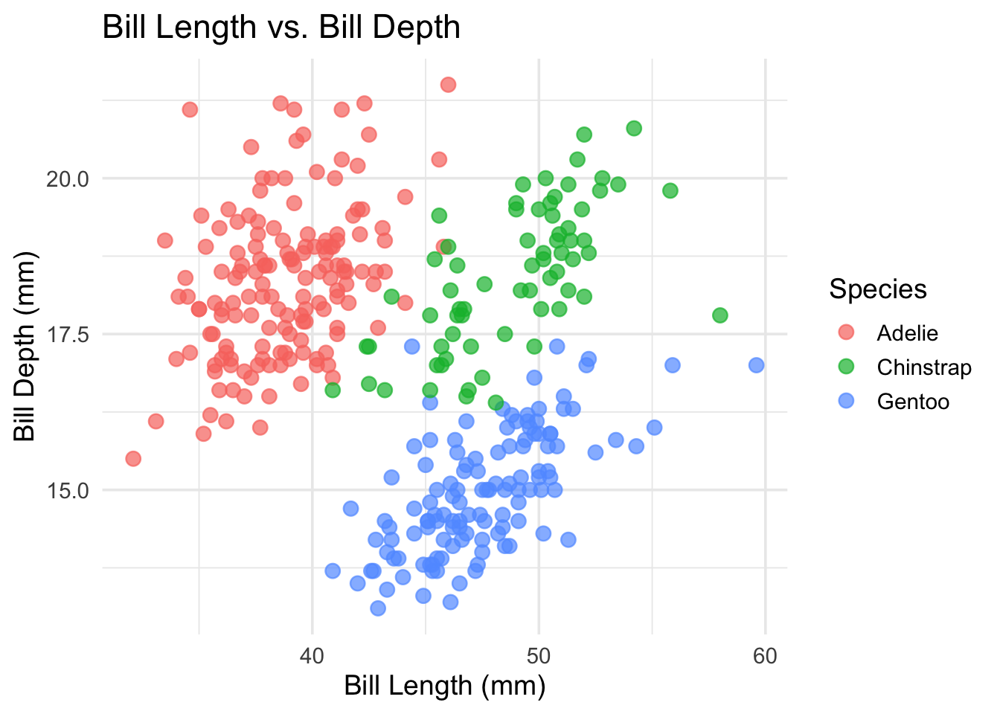
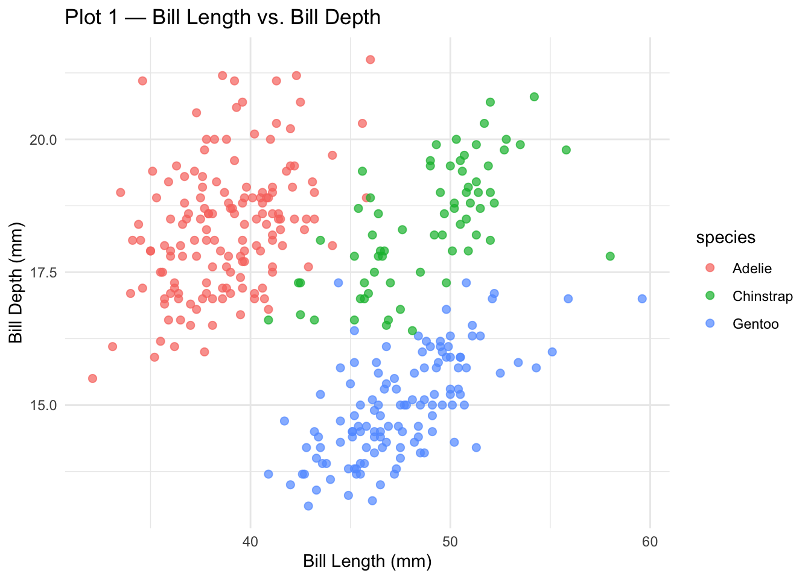
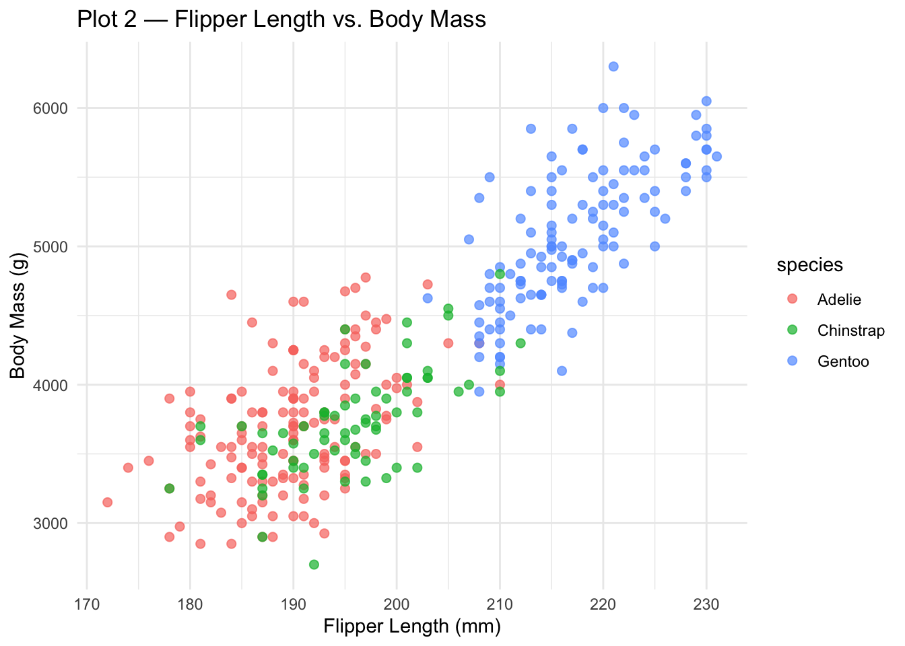

Let’s walk through how to create your own scrollytelling story with closeread!
quarto add qmd-lab/closereadScrollytelling
Let’s walk through how to create your own scrollytelling story with closeread!
Have you ever wanted to go beyond the traditional structure of a .qmd? Scrollytelling is a powerful data storytelling technique that invites your reader to walk in the data’s shoes — revealing insights step by step as they scroll. The closeread Quarto extension makes this easy, giving you flexible, interactive tools to tell your story exactly the way you want.
First, make sure you’ve added the closeread Quarto extension. Navigate to your project directory where you plan to use closeread. Scroll to see what to paste into your terminal!
Setup done — let’s get started!
The Main Components
The Main Components
Stickies: Think of a sticky like a sticky note — stuck in place! As the user scrolls, stickies remain fixed on screen. They can be text, an image, a plot, or a code chunk.
The Main Components
Stickies: Think of a sticky like a sticky note — stuck in place! As the user scrolls, stickies remain fixed on screen. They can be text, an image, a plot, or a code chunk.
Narrative/ Triggers: The scrollable text column that tells your story. Narrative blocks become triggers when they include anreference, which activates or applies effects to a sticky as the block scrolls into view.
This is an example of a trigger! It moves as you scroll.
This is a second trigger. Notice how the sticky is still there!
This is an example of a sticky! As you scroll, this text stays in place until you reach a new section.
Triggers can also be plots! Scroll to see.


Every closeread document is built from sections. Within each section, you specify a layout that controls where your narrative and sticky content appear. There are five layout options to choose from.
Note: Any content outside a closeread section will appear as regular markdown — no scrolling behavior.
sidebar-left (default)
Narrative scrolls on the left
sidebar-right
Narrative scrolls on the right
overlay-left
Full-screen sticky with floating narrative on the left
overlay-center
Full-screen sticky with centered floating narrative
overlay-right
Full-screen sticky with floating narrative on the right
Choose the layout that best showcases your story!
::::{.cr-section layout="LAYOUT-NAME"}
Content goes here!
::::Scroll back up if sticky or trigger aren’t clicking yet. Otherwise,keep scrolling to learn how to code them!
To create a sticky, wrap your element in a fenced div and give it an ID prefixed with cr-:
To create a trigger, reference your sticky ID using the @cr- syntax. When this text scrolls into view, it will reveal your sticky!
Creating a Sticky:
:::{#cr-YOUR-ID}
Your content goes here!
(text, image, plot, code, etc.)
:::#cr-Creating a Trigger:
Your narrative text goes here. @cr-YOUR-IDOr wrap multiple blocks:
:::{focus-on="cr-YOUR-ID"}
Your narrative text goes here.
More text here too!
:::@cr- for single-paragraph triggersfocus-on= for multi-block triggersPutting It All Together
👈 That box on the left? That’s a sticky with the ID #cr-together. Look at the code — you can see exactly where it’s defined!
This line of text is a trigger. Notice how it ends with \@cr-together? That’s what links it to the sticky and keeps it locked in place while you scroll.
This is a third trigger — still referencing the same sticky. Scroll through the code on the left and find all three triggers!
Once you scroll past this section, the sticky disappears. Stickies only live inside their cr-section wrapper.
The code creating this exact section:
::::{.cr-section layout="sidebar-right"}
That box on the left? That's a sticky... \@cr-together
This line of text is a trigger... \@cr-together
This is a third trigger... \@cr-together
Once you scroll past this section... \@cr-together
:::{#cr-together} ← this is the sticky!
The code creating this exact section!
:::
::::Going Deeper with Closeread
::::{.cr-section layout = “sidebar-right”}
Feature 1: Highlighting
::::
The most reliable way to use highlight= in closeread is with code blocks. The sticky on the left shows an R script — scroll to watch specific lines light up!
highlight="1,2" — lines 1 and 2 are highlighted. Here we’re loading our packages. You can highlight a single line or multiple lines separated by commas.
highlight="4" — now just line 4. We’re pointing to where the data is being loaded.
highlight="6,7,8" — lines 6 through 8. This is where the ggplot is being built. Highlighting a range of lines is great for walking through logic step by step.
Here’s how to write this in your .qmd file:
How to write highlight= for code blocks:
/* highlight= goes on the focus-on block */
/* numbers refer to line numbers in the code block */
/* single line */
:::{focus-on="cr-YOUR-STICKY" highlight="4"}
Narrative text here.
:::
/* multiple lines (comma-separated) */
:::{focus-on="cr-YOUR-STICKY" highlight="1,2"}
Narrative text here.
:::
/* range of lines (dash) */
:::{focus-on="cr-YOUR-STICKY" highlight="4-6"}
Narrative text here.
:::
/* your sticky just needs a regular code block */
:::{#cr-YOUR-STICKY}
```r
library(ggplot2) ← line 1
library(palmerpenguins) ← line 2
```
:::Note: highlight= with line numbers only works on code block stickies — for prose text, use the span ID approach instead.
::::{.cr-section layout = “sidebar-right”}
Feature 2: Scaling with scale-by
::::
Default view — no transform. The full plot is visible in the sticky.
scale-by="1.5" — zoomed in 50%. The species clusters are easier to compare. Values above 1 zoom in.
scale-by="2.5" — zoomed in 150%. Great for dense plots or small labels.
scale-by="0.7" — zoomed out. Values below 1 shrink the sticky.
Back to default. Each trigger sets its own zoom level independently — they don’t stack.
Here’s the code that produced this section:

scale-by goes on your focus-on trigger:
/* Default — no transform */
:::{focus-on="cr-scale-demo"}
No transform.
:::
/* Zoom in 50% */
:::{focus-on="cr-scale-demo" scale-by="1.5"}
Zoomed in!
:::
/* Zoom in 150% */
:::{focus-on="cr-scale-demo" scale-by="2.5"}
Even closer!
:::
/* Zoom out */
:::{focus-on="cr-scale-demo" scale-by="0.7"}
Zoomed out.
:::::::{.cr-section layout = “sidebar-right”}
Feature 3: Panning with pan-to
::::
pan-to lets you slide the viewer’s focus across a sticky — perfect for large images, wide plots, or directing attention to a specific region. Scroll to watch the plot shift!
pan-to="25%,0%" — panned 25% of its width to the right. Positive percentages shift right (x) and down (y).
pan-to="-25%,0%" — panned 25% to the left. Negative values shift left (x) and up (y).
pan-to="0%,30%" — panned 30% downward. This is great for focusing on axis labels or legends at the bottom of a chart.
pan-to="25%,-20%" scale-by="1.8" — pan and scale combined! Pan shifts the view while scale-by zooms in. Together, they let you spotlight a specific region of any sticky.
Back to the default view. Like all focus effects, a trigger with no attributes resets the sticky.
Here’s the code for the combined pan + scale trigger:

pan-to syntax:
/* pan-to takes x,y values in % or px */
/* Pan right */
:::{focus-on="cr-YOUR-STICKY" pan-to="25%,0%"}
Narrative text.
:::
/* Pan left and up */
:::{focus-on="cr-YOUR-STICKY" pan-to="-25%,-20%"}
Narrative text.
:::
/* Combine with scale-by for a spotlight effect */
:::{focus-on="cr-YOUR-STICKY" pan-to="25%,-20%" scale-by="1.8"}
Zoomed in and shifted!
:::
/* Using pixel values instead of percentages */
:::{focus-on="cr-YOUR-STICKY" pan-to="100px,-50px"}
Shifted by exact pixels.
:::Tip: pan-to works especially well with images and large plots where you want to guide the reader’s eye to a specific area.
Feature 4: Zooming with zoom-to
zoom-to combines panning and scaling into one attribute — it automatically pans and zooms to a specific line of code or a named span. This is perfect for code walkthroughs!
zoom-to="1" — zoomed into line 1. The view pans and scales so this line fills most of the viewport.
zoom-to="12" — jumped straight to line 12. Unlike manually combining pan-to and scale-by, zoom-to handles both automatically.
zoom-to="20" — now focused on line 20. Notice how it pans vertically and scales in one smooth motion.
:::{focus-on=“cr-zoom-demo” hlz = “4”} :::{.body-text-m} You can also use hlz (“highlight + zoom”) to highlight a line while zooming to it — the best of both worlds!
:::
Here’s the syntax:
library(ggplot2)
library(palmerpenguins)
penguins_clean <- na.omit(penguins)
ggplot(penguins_clean, aes(x = bill_length_mm,
y = bill_depth_mm,
color = species)) +
geom_point(size = 3, alpha = 0.7) +
theme_minimal()
penguins_clean <- na.omit(penguins)
ggplot(penguins_clean, aes(x = bill_length_mm,
y = bill_depth_mm,
color = species)) +
geom_point(size = 3, alpha = 0.7) +
theme_minimal()
penguins_clean <- na.omit(penguins)
ggplot(penguins_clean, aes(x = bill_length_mm,
y = bill_depth_mm,
color = species)) +
geom_point(size = 3, alpha = 0.7) +
theme_minimal()zoom-to and hlz syntax:
/* zoom-to a specific line number */
:::{focus-on="cr-YOUR-STICKY" zoom-to="4"}
Zoomed to line 4!
:::
/* zoom-to a named span (for line blocks) */
:::{focus-on="cr-YOUR-STICKY" zoom-to="cr-my-span"}
Zoomed to the span!
:::
/* hlz = highlight + zoom in one attribute */
:::{focus-on="cr-YOUR-STICKY" hlz="4"}
Line 4 is highlighted AND zoomed!
:::
/* hlz with a named span */
:::{focus-on="cr-YOUR-STICKY" hlz="cr-my-span"}
Span is highlighted AND zoomed!
:::Note: zoom-to overrides pan-to and scale-by if they’re on the same trigger, since it handles both. Use hlz when you want zoom + highlight together.
::::
Feature 5: Custom Styling with SCSS
What Can You Customize?
Closeread works seamlessly with SCSS, giving you control over four major areas. Scroll to see each one!
Background — the canvas behind everything. Set a background color or image for your closeread sections.
Sticky Elements — the container holding your stickies. Control background color, padding, borders, and shadows.
Narrative Elements — the scrolling text column. Adjust background, padding, and width.
Fonts — size, family, and color. Define reusable utility classes you can apply anywhere in your .qmd.
How To Customize: Writing Your SCSS
Before writing any styles, you need two things: a .scss file and a link to it in your YAML front matter. Scroll to see both!
Step 1 — Your YAML: Add a theme key under closeread-html that points to your SCSS file. Make sure it’s in the same directory as your .qmd.
Step 2 — Your SCSS file: Create closeread-styles.scss in that same project directory. Standard SCSS syntax — no special closeread magic required.
Now let’s look at each style category. On the left is the code for background, stickies, narrative, and fonts all in one file. Scroll through to see each block!
Background targets .cr-section. Use background-color for a solid fill or background-image for a photo. Set color here too so your text stays readable.
Sticky elements target .sticky-col-stack — the container wrapping your :::{#cr-YOUR-ID} content. Round the corners, add a shadow, give it a background — whatever fits your story.
Narrative elements target .narrative-col — the scrolling text column. A semi-transparent rgba background works especially well with overlay-* layouts, where narrative floats over a full-screen sticky.
Fonts — import a Google Font at the top, set font-family on body, then define reusable utility classes like .teal-text or .body-text-xl. These are the exact classes used throughout this document!
Your complete closeread-styles.scss:
/* ── Google Fonts ────────────────────────── */
@import url('https://fonts.googleapis.com/css2?
family=Lato:wght@400;700&display=swap');
/* ── Base Body ───────────────────────────── */
body {
font-family: 'Lato', sans-serif;
line-height: 1.65;
}
/* ── Section Background ──────────────────── */
.cr-section {
background-color: #f4f1ec;
background-image: url("your-image.jpg");
background-size: cover;
color: #1a1a2e;
}
/* ── Sticky Container ────────────────────── */
.sticky-col-stack {
background-color: #ffffff;
border-radius: 8px;
padding: 2rem;
box-shadow: 0 4px 16px rgba(0, 0, 0, 0.1);
border: 1px solid #e0e0e0;
}
/* ── Narrative Column ────────────────────── */
.narrative-col {
background-color: rgba(255, 255, 255, 0.85);
padding: 1.5rem 2rem;
border-radius: 8px;
max-width: 480px;
}
/* ── Font Size Utilities ─────────────────── */
.body-text-xl { font-size: 2rem; }
.body-text-l { font-size: 1.5rem; }
.body-text-m { font-size: 1.15rem; }
.body-text-s { font-size: 0.9rem; }
/* ── Color Utilities ─────────────────────── */
.teal-text { color: #047C90; }
.dark-blue-text { color: #1a1a2e; }
.white-text { color: #ffffff; }Quick Recap
What you’ve learned:
Stickies & Triggers — the two building blocks of every closeread document.
Sections & Layouts — five layout options to control how narrative and stickies appear.
Highlighting — draw attention to specific lines of code.
Scaling — zoom in and out with scale-by.
Panning — slide focus across a sticky with pan-to.
Zooming — auto-pan and auto-scale to a line with zoom-to.
SCSS Styling — customize backgrounds, stickies, narrative, and fonts.
Now go build your own scrollytelling story!